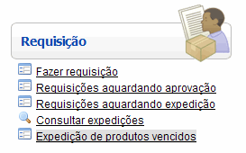
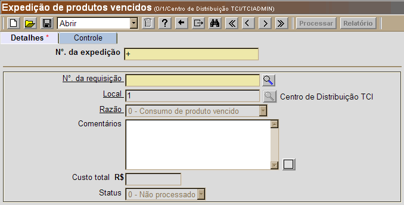
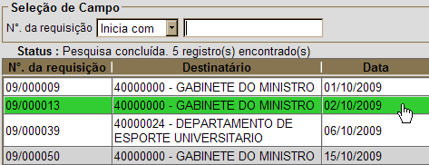
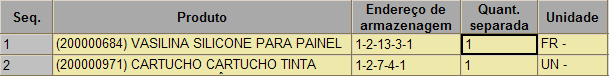

Expedição de Produtos Vencidos [ Voltar ]O formulário "Expedição de produtos vencidos" tem por função permitir a expedição de produtos cujo prazo de validade já tenha expirado. Ele pode ser encontrado dentro do menu "Requisição". 
Ao clicar em "Expedição de produtos vencidos", a seguinte tela será exibida: 
Siga os seguintes passos para processar uma expedição de produtos vencidos: 1º
Passo: informe o número da requisição desejada. Caso
não saiba o número da requisição em questão, clique no botão 
2º
Passo: clique no botão 3º Passo: confira os dados presentes na linha da requisição. O sistema preenche o campo "Quant. separada" automaticamente com a quantidade pendente (ainda não atendida). Se necessário, o usuário poderá alterar a "Quant. separada", mas esta não pode ser superior à quantidade pendente ou à quantidade disponível em estoque. 
Caso alguma
alteração tenha sido feita neste estágio da expedição, clique no botão 4º Passo: processe a expedição. Após
conferir todos os detalhes do registro, clique no botão 5° Passo:
clique no botão
|


 para
imprimir o comprovante de entrega dos produtos vencidos.
para
imprimir o comprovante de entrega dos produtos vencidos.